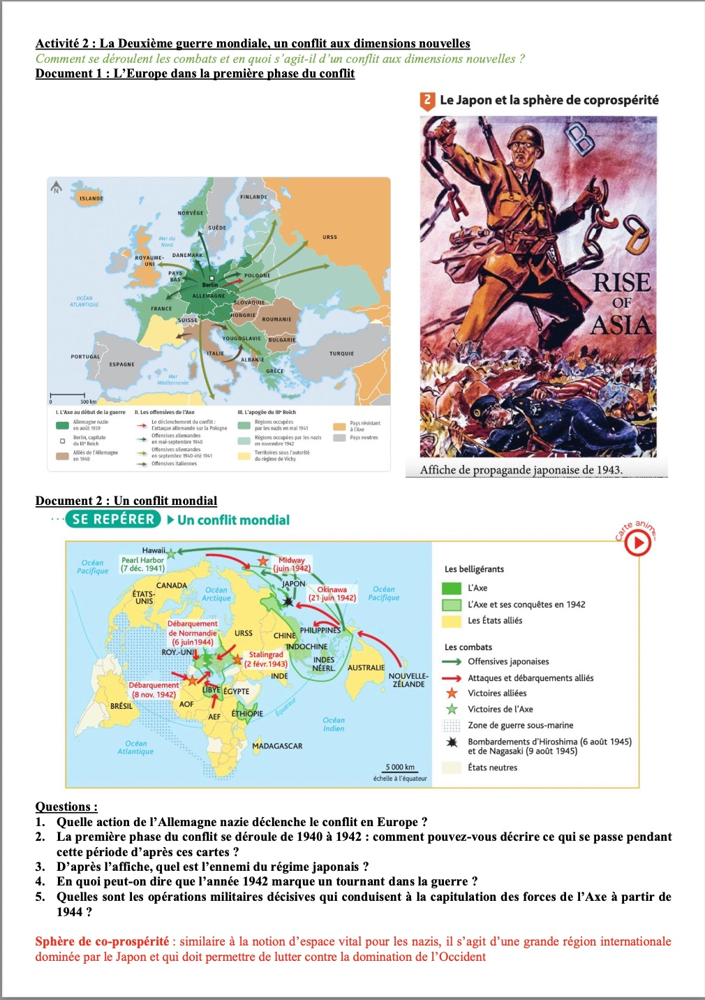

Comprendre les régimes totalitaires
Construire une carte mentale de synthèse
Comment se caractérisent les régimes totalitaires ?
À partir de votre cours, vous allez construire une carte mentale permettant de comparer les régimes de Staline en URSS et de Hitler en Allemagne nazie.
Les trois branches de votre carte mentale :
Classez les caractéristiques des régimes totalitaires
Les caractéristiques communes montrent que les deux régimes cherchent à contrôler et transformer la société par l'idéologie, la propagande, l'encadrement et la répression.
Caractéristiques communes
- Culte de la personnalité
- Propagande
- Homme nouveau
- Encadrement de la jeunesse
- Arrestations, exécutions et camps
URSS de Staline
- Lutte des classes
- Citoyen collectiviste et socialiste
- NKVD
- Grande Terreur
- Ennemis politiques et sociaux
Allemagne nazie
- Racisme et antisémitisme
- Fidélité au Führer
- SA, SS et police
- Persécutions raciales
- Juifs désignés comme ennemis
La Seconde Guerre mondiale : un conflit aux dimensions nouvelles
Étude de documents et compréhension des grandes étapes du conflit
Comment se déroulent les combats et en quoi s'agit-il d'un conflit aux dimensions nouvelles ?
Vous allez étudier deux cartes et une affiche de propagande afin de comprendre l'extension géographique de la guerre, les conquêtes de l'Axe et les grandes étapes de la victoire des Alliés.
L'Europe et le monde dans la Seconde Guerre mondiale

Documents de travail : l'Europe dans la première phase du conflit, affiche japonaise de 1943 et carte du conflit mondial. Cliquez sur l'image pour l'agrandir.
Répondez aux cinq questions
En Europe :
Les débarquements alliés en Normandie le 6 juin 1944, puis en Provence le 15 août 1944, permettent la libération progressive de la France. À l'Est, l'Armée rouge avance vers l'Allemagne et prend Berlin. L'Allemagne nazie capitule le 8 mai 1945.En Asie :
Les États-Unis progressent dans le Pacifique. Les bombardements atomiques d'Hiroshima le 6 août 1945 et de Nagasaki le 9 août 1945 précipitent la capitulation japonaise, officiellement signée le 2 septembre 1945.Le bilan à retenir
À recopier dans votre cahier
II – La Seconde Guerre mondiale (1939-1945)
Née de la montée de régimes totalitaires expansionnistes et militaristes, la Seconde Guerre mondiale commence en 1937 en Asie et en 1939 en Europe. Avec l'entrée en guerre de l'URSS, puis des États-Unis, la guerre s'étend au monde entier. Les pays belligérants mobilisent des troupes et des moyens technologiques sans précédent. Les violences extrêmes exercées contre les civils, notamment dans le cadre de la politique génocidaire nazie, font de ce conflit une guerre d'anéantissement inédite.
A – Un conflit militaire aux dimensions nouvelles
1. La première phase de la guerre : les victoires de l'Axe (1939-1942)
Hitler dote le IIIe Reich d'une armée puissante et se lance dans une politique d'expansion pour conquérir « l'espace vital » de l'Allemagne, persuadé de l'inaction des démocraties occidentales paralysées par le pacifisme.
Le 1er septembre 1939, l'invasion de la Pologne par l'Allemagne marque l'entrée en guerre de la France et du Royaume-Uni.
Entre 1939 et 1942, les forces de l'Axe conquièrent rapidement une grande partie de l'Europe grâce à la stratégie de la Blitzkrieg, ou guerre-éclair, qui combine l'usage des blindés et de l'aviation pour percer les lignes ennemies.
En juin 1941, Hitler rompt le pacte de non-agression signé avec l'URSS et lance l'opération Barbarossa. L'Allemagne envahit alors l'Union soviétique. En Europe occidentale, seul le Royaume-Uni résiste à l'Allemagne. La guerre s'étend ainsi à l'Atlantique, à la Méditerranée et à l'Afrique.
En Asie, le Japon met en place à partir des années 1930 une sphère de « coprospérité ». Il se rapproche de l'Allemagne, avec laquelle il signe le pacte anti-Komintern. À partir de 1937, le Japon attaque la Chine et envahit son territoire.
Le 7 décembre 1941, le Japon attaque la base navale américaine de Pearl Harbor. Cette attaque provoque l'entrée en guerre des États-Unis.
2. À partir de 1942 : le retournement de la guerre
À partir de 1942, les Alliés commencent à repousser les forces de l'Axe. Ils s'associent dans une « Grande Alliance » contre les puissances de l'Axe.
Dans le Pacifique, la victoire américaine de Midway en juin 1942 constitue un tournant majeur. En Afrique du Nord, la victoire britannique d'El Alamein et le débarquement anglo-américain du 8 novembre 1942 accélèrent le recul de l'Axe.
Sur le front de l'Est, la bataille de Stalingrad, commencée en 1942, se termine par une victoire soviétique en février 1943. Elle marque un tournant majeur dans la guerre en Europe.
3. 1944-1945 : la défaite des puissances de l'Axe
En 1944 et 1945, le Reich est pris en tenaille par les débarquements alliés à l'Ouest et l'avancée soviétique à l'Est.
Les Alliés débarquent en Normandie les 5 et 6 juin 1944, puis en Provence le 15 août 1944. Ces opérations permettent la libération progressive de la France.
À l'Est, les troupes soviétiques progressent jusqu'à Berlin. Le Reich capitule le 8 mai 1945.
Dans le Pacifique, les États-Unis poursuivent la reconquête des territoires occupés par le Japon. Les bombes atomiques sont larguées sur Hiroshima le 6 août 1945 et sur Nagasaki le 9 août 1945. Le Japon capitule officiellement le 2 septembre 1945.
Notions à connaître
- 1937 : début de la guerre en Asie.
- 1er septembre 1939 : invasion de la Pologne.
- 7 décembre 1941 : attaque de Pearl Harbor.
- 1942 : début du retournement de la guerre.
- Février 1943 : victoire soviétique à Stalingrad.
- 6 juin 1944 : débarquement de Normandie.
- 15 août 1944 : débarquement de Provence.
- 8 mai 1945 : capitulation de l'Allemagne.
- 6 et 9 août 1945 : Hiroshima et Nagasaki.
- 2 septembre 1945 : capitulation du Japon.